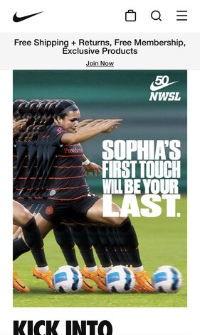
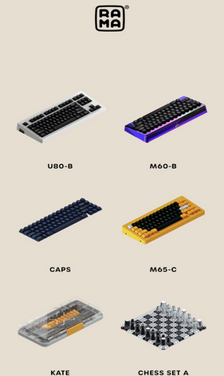

Rule of Thirds
Nike
The image below follows the 'Rule of Thirds' by having the soccer player as a focal point off to the left and another one with the text to the right.
When photos follow the 'Rule of Thirds' it makes it a more pleasant experience for the viewer. You can easily read the text that is display while also being able to easily see the action photo too. The choice to use both of these was really well done and fit together very well.
Alignment
Etsy
Etsy does a great job at aligning the categories in the photo below. They are aligned both vertically and horizontally. The web page in general is simple to understand and really easy to read. The text above the categories is centered well and easy to read with the colors chosen.
Alignment has to be one of the most important aspects of design principles. Etsy does a wonderful job of ensuring that the elements have a pleasing connection with each other. It presents a uniform and appealing look when you initially open the webpage.
Clean Design
Rama Works
Rama Works does a great job of evenly spacing the products in which they provide while keeping it minimal and clutter-free. The spacing and design provided give the viewer a simple way of selecting a keyboard that they want without feeling overwhelmed or lost in that selection process.
Having a clean desgin can make or break a company. If your website is not cleanly designed it can frustrate visitors and cause them to seek services elsewhere. To keep the design clean you want to apply alignment while also providing eye catching images and a clean font.